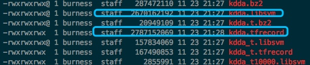
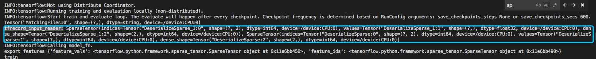
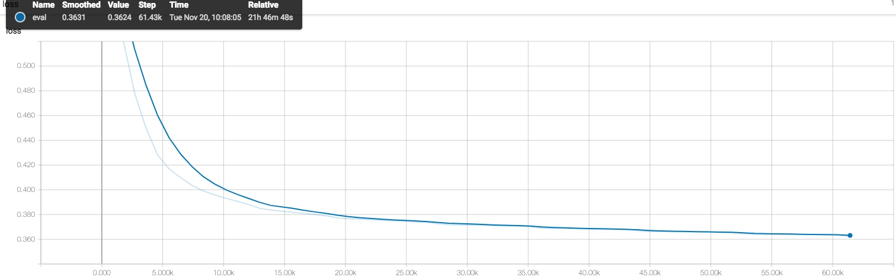
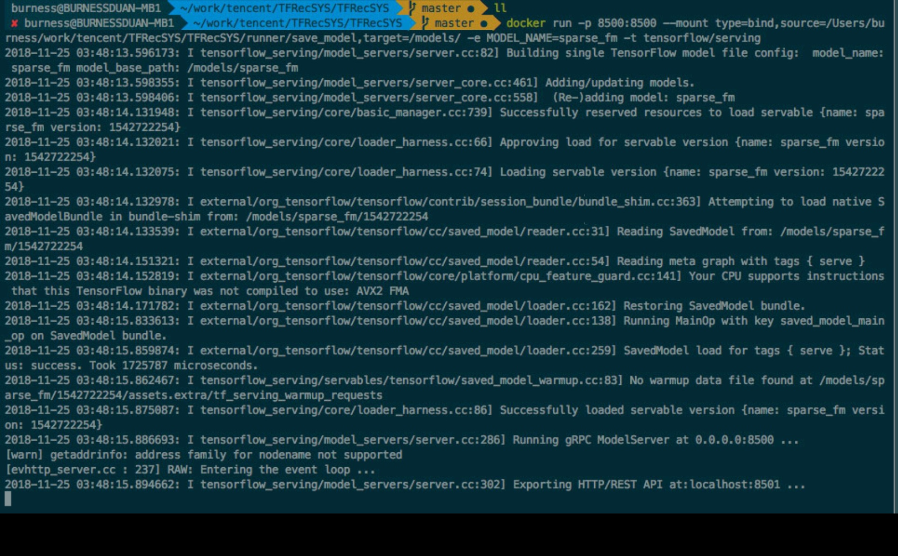

TensorFlow Sparse的一个优化
分布式TensorFlow在Sparse模型上的实践
前言
如果你去搜TensorFlow教程，或者分布式TensorFlow教程，可能会搜到很多mnist或者word2vec的模型，但是对于Sparse模型(LR, WDL等)，研究的比较少，对于分布式训练的研究就更少了。最近刚刚基于分布式TensorFlow上线了一个LR的CTR模型，支持百亿级特征，训练速度也还不错，故写下一些个人的心得体会，如果有同学也在搞类似的模型欢迎一起讨论。
训练相关
集群setup
分布式TensorFlow中有三种角色: Master(Chief), PS和Worker. 其中Master负责训练的启动和停止，全局变量的初始化等；PS负责存储和更新所有训练的参数(变量); Worker负责每个mini batch的梯度计算。如果去网上找分布式TensorFlow的教程，一个普遍的做法是使用Worker 0作为Master, 例如这里官方给出的例子。我个人比较建议把master独立出来，不参与训练，只进行训练过程的管理, 这样有几个好处:
独立出Master用于训练的任务分配，状态管理，Evaluation, Checkpoint等，可以让代码更加清晰。
Master由于任务比worker多，往往消耗的资源如CPU/内存也和worker不一样。独立出来以后，在k8s上比较容易分配不同的资源。
一些训练框架如Kubeflow使用Master的状态来确定整个任务的状态。
训练样本的分配
在sparse模型中，采用分布式训练的原因一般有两种:
数据很多，希望用多个worker加速。
模型很大，希望用多个PS来加速。
前一个就涉及到训练样本怎么分配的问题。从目前网上公开的关于分布式TF训练的讨论，以及官方分布式的文档和教程中，很少涉及这个问题，因此最佳实践并不清楚。我目前的解决方法是引入一个zookeeper进行辅助。由master把任务写到zookeeper, 每个worker去读取自己应该训练哪些文件。基本流程如下:
master
file_list = list_dir(flags.input_dir)
for worker, worker_file in zip(workers, file_list):
self.zk.create(f'/jobs/{worker}', ','.join(worker_file).encode('utf8'), makepath=True)
start master session ...
worker
wait_for_jobs = Semaphore(0)
@self.zk.DataWatch(f"/jobs/{worker}")
def watch_jobs(jobs, _stat, _event):
if jobs:
data_paths = jobs.decode('utf8').split(',')
self.train_data_paths = data_paths
wait_for_jobs.release()
wait_for_jobs.acquire()
start worker session ...
引入zookeeper之后，文件的分配就变得非常灵活，并且后续也可以加入使用master监控worker状态等功能。
使用device_filter
启动分布式TF集群时，每个节点都会启动一个Server. 默认情况下，每个节点都会跟其他节点进行通信，然后再开始创建Session. 在集群节点多时，会带来两个问题：
由于每个节点两两通信，造成训练的启动会比较慢。
当某些worker挂掉重启（例如因为内存消耗过多），如果其他某些worker已经跑完结束了，重启后的worker就会卡住，一直等待其他的worker。此时会显示log: CreateSession still waiting for response from worker: /job:worker/replica:0/task:x.
解决这个问题的方法是使用device filter. 例如:
config = tf.ConfigProto(device_filters=["/job:ps", f"/job:{self.task_type}/task:{self.task_index}"])
with tf.train.MonitoredTrainingSession(
...,
config=config
):
...
这样，每个worker在启动时就只会和所有的PS进行通信，而不会和其他worker进行通信，既提高了启动速度，又提高了健壮性。
给session.run加上timeout
有时在一个batch比较大时，由于HDFS暂时不可用或者延时高等原因，有可能会导致session.run卡住。可以给它加一个timeout来提高程序的健壮性。
session.run(fetches, feed_dict, options=tf.RunOptions(timeout_in_ms=timeout))
优雅的停止训练
在很多分布式的例子里(例如官方的这个)，都没有涉及到训练怎么停止的问题。通常的做法都是这样:
server = tf.train.Server(
cluster, job_name=FLAGS.job_name, task_index=FLAGS.task_index)
if FLAGS.job_name == "ps":
server.join()
这样的话，一旦开始训练，PS就会block, 直到训练结束也不会停止，只能暴力删除任务(顺便说一下，MXNet更粗暴，PS运行完import mxnet就block了)。前面我们已经引入了zookeeper, 所以可以相对比较优雅的解决这个问题。master监控worker的状态，当worker全部完成后，master设置自己的状态为完成。PS和worker检测到master完成后，就结束自己。
def join():
while True:
status = self.zk.get_async('/status/master').get(timeout=3)
if status == 'done':
break
time.sleep(10)
master
for worker in workers:
status = self.zk.get_async(f'/status/worker/{worker}').get(timeout=3)
update_all_workers_done()
if all_workers_done:
self.zk.create('/status/master', b'done', makepath=True)
ps
join()
worker
while has_more_data:
train()
self.zk.set('/status/worker/{worker}', b'done')
join()
Kubeflow的使用
Kubeflow是一个用于分布式TF训练提交任务的项目。它主要由两个部分组成，一是ksonnet，一是tf-operator。ksonnet主要用于方便编写k8s上的manifest, tf-operator是真正起作用的部分，会帮你设置好TF_CONFIG这个关键的环境变量，你只需要设置多少个PS, 多少个worker就可以了。个人建议用ksonnet生成一个skeleton, 把tf-operator的manifest打印出来(使用ks show -c default), 以后就可以跳过ksonnet直接用tf-operator了。因为k8s的manifest往往也需要修改很多东西，最后还是要用程序生成，没必要先生成ksonnet再生成yaml.
Estimator的局限性
一开始我使用的是TF的高级API Estimator, 参考这里的WDL模型. 后来发现Estimator有一些问题，没法满足目前的需要。
一是性能问题。我发现同样的linear model, 手写的模型是Estimator的性能的5-10倍。具体原因尚不清楚，有待进一步调查。
UPDATE: 性能问题的原因找到了，TL;DR: 在sparse场景使用Dataset API时, 先batch再map(parse_example)会更快。详情见: https://stackoverflow.com/questions/50781373/using-feed-dict-is-more-than-5x-faster-than-using-dataset-api
二灵活性问题。Estimator API目前支持分布式的接口是train_and_evaluate, 它的逻辑可以从源代码里看到:
training.py
def run_master(self):
...
self._start_distributed_training(saving_listeners=saving_listeners)
if not evaluator.is_final_export_triggered:
logging.info('Training has already ended. But the last eval is skipped '
'due to eval throttle_secs. Now evaluating the final '
'checkpoint.')
evaluator.evaluate_and_export()
estimator.py
def export_savedmodel(...):
...
with tf_session.Session(config=self._session_config) as session:
saver_for_restore = estimator_spec.scaffold.saver or saver.Saver(
sharded=True)
saver_for_restore.restore(session, checkpoint_path)
...
builder = ...
builder.save(as_text)
可以看到Estimator有两个问题，一是运行完才进行evaluate, 但在大型的sparse model里，训练一轮可能要几个小时，我们希望一边训练一边evaluate, 在训练过程中就能尽快的掌握效果的变化(例如master只拿到test set, worker只拿到training set, 这样一开始就能evaluate)。二是每次导出模型时，Estimator API会新建一个session, 加载最近的一个checkpoint, 然后再导出模型。但实际上，一个sparse模型在TF里耗的内存可能是100多G，double一下会非常浪费，而且导出checkpoint也极慢，也是需要避免的。基于这两个问题，我暂时没有使用Estimator来进行训练。
使用feature column(但不使用Estimator)
虽然不能用Estimator, 但是使用feature column还是完全没有问题的。不幸的是网上几乎没有人这么用，所以我把我的使用方法分享一下，这其实也是Estimator的源代码里的使用方式:
define feature columns as usual
feature_columns = ...
example = TFRecordDataset(...).make_one_shot_iterator().get_next()
parsed_example = tf.parse_example(example, tf.feature_column.make_parse_example_spec(feature_columns))
logits = tf.feature_column.linear_model(
features=parsed_example,
feature_columns=feature_columns,
cols_to_vars=cols_to_vars
)
parse_example会把TFRecord解析成一个feature dict, key是feature的名称，value是feature的值。tf.feature_column.linear_model这个API会自动生成一个线性模型，并把变量(weight)的reference, 存在cols_to_vars这个字典中。如果使用dnn的模型，可以参考tf.feature_column.input_layer这个API, 用法类似，会把feature dict转换成一个行向量。
模型导出
使用多PS时，常见的做法是使用tf.train.replica_device_setter来把不同的变量放在不同的PS节点上。有时一个变量也会很大(这在sparse模型里很常见)，也需要拆分到不同的PS上。这时候就需要使用partitioner:
partitioner = tf.min_max_variable_partitioner(
max_partitions=variable_partitions,
min_slice_size=64 << 20)
with tf.variable_scope(
...,
partitioner = partitioner
):
# define model
由于TensorFlow不支持sparse weight(注意: 跟sparse tensor是两码事，这里指的是被训练的变量不能是sparse的), 所以在PS上存的变量还是dense的，比如你的模型里有100亿的参数，那PS上就得存100亿。但实际上对于sparse模型，大部分的weight其实是0，最终有效的weight可能只有0.1% - 1%. 所以可以做一个优化，只导出非0参数:
indices = tf.where(tf.not_equal(vars_concat, 0))
values = tf.gather(vars_concat, indices)
shape = tf.shape(vars_concat)
self.variables[column_name] = {
'indices': indices,
'values': values,
'shape': shape,
}
这样就把变量的非0下标，非0值和dense shape都放进了self.variables里，之后就只导出self.variables即可。
此外, 在多PS的时候，做checkpoint的时候一定要记得enable sharding:
saver = tf.train.Saver(sharded=True, allow_empty=True)
...
这样在master进行checkpoint的时候，每个PS会并发写checkpoint文件。否则，所有参数会被传到master上进行集中写checkpoint, 消耗内存巨大。
导出优化
前面提到的导出非0参数的方法仍有一个问题，就是会把参数都传到一台机器(master)上，计算出非0再保存。这一点可以由grafana上的监控验证:
可以看到，每隔一段时间进行模型导出时，master的网络IO就会达到一个峰值，是平时的好几倍。如果能把non_zero固定到PS上进行计算，则没有这个问题。代码如下:
for var in var_or_var_list:
var_shape = var.save_slice_info.var_shape
var_offset = var.save_slice_info.var_offset
with tf.device(var.device):
var = tf.reshape(var, [-1])
var_indices = tf.where(tf.not_equal(var, 0))
var_values = tf.gather(var_, var_indices)
indices.append(var_indices + var_offset[0])
values.append(var_values)
indices = tf.concat(indices, axis=0)
values = tf.concat(values, axis=0)
进行了如上修改之后，master的网络消耗变成下图:
参考Tensorboard, 可以看到gather操作确实被放到了PS上进行运算:
模型上线
我们目前在线上prediction时没有使用tf-serving, 而是将变量导出用Java服务进行prediction. 主要原因还是TF的PS不支持sparse存储，模型在单台机器存不下，没法使用serving. 在自己实现LR的prediction时，要注意验证线上线下的一致性，有一些常见的坑，比如没加bias, default_value没处理，等等。
使用TensorBoard来理解模型
在训练时用TensorBoard来打出Graph，对理解训练的细节很有帮助。例如，我们试图想象这么一个问题：在分布式训练中，参数的更新是如何进行的？以下有两种方案:
worker计算gradients, ps合并gradients并进行更新
worker计算gradients, 计算应该update成什么值，然后发给ps进行更新
到底哪个是正确的？我们看一下TensorBoard就知道了: TensorBoard 可以看到，FTRL的Operation是在PS上运行的。所以是第一种。
Metrics
在TensorFlow中有一系列metrics, 例如accuracy, AUC等等，用于评估训练的指标。需要注意的是TensorFlow中的这些metrics都是在求历史平均值，而不是当前batch。所以如果训练一开始就进行评估，使用TensorFlow的AUC和Sklearn的AUC，会发现TensorFlow的AUC会低一些，因为TensorFlow的AUC其实是考虑了历史的所有样本。正因如此Estimator的evaluate才会有一个step的参数，例如运行100个step，就会得到这100个batch上的metric.
性能相关
profiling
要进行性能优化，首先必须先做profiling。可以使用tf.train.ProfilerHook来进行.
hooks = [tf.train.ProfilerHook(save_secs=60, output_dir=profile_dir, show_memory=True, show_dataflow=True)]
之后会写出timeline文件，可以使用chrome输入chrome://tracing来打开。
我们来看一个例子: 上图中IteratorGetNext占用了非常长的时间。这其实是在从HDFS读取数据。我们加入prefetch后，profile变成下面这个样子: 可以看到，加入prefetch以后HDFS读取延时和训练时间在相当的数量级，延时有所好转。
另一个例子: 可以看到, RecvTensor占用了大部分时间，说明瓶颈在PS上。经调查发现是partition太多(64)个而PS只有8个，造成传输数据效率下降。调整partition数量后变成如下:
使用Grafana进行性能监控
可以使用Grafana和heapster来进行集群节点以及Pod的监控，查看CPU,内存,网络等性能指标。
apiVersion: extensions/v1beta1
kind: Deployment
metadata:
name: monitoring-grafana
namespace: kube-system
spec:
replicas: 1
template:
metadata:
labels:
task: monitoring
k8s-app: grafana
spec:
containers:
- name: grafana
image: k8s.gcr.io/heapster-grafana-amd64:v4.4.3
ports:
- containerPort: 3000
protocol: TCP
volumeMounts:
- mountPath: /etc/ssl/certs
name: ca-certificates
readOnly: true
- mountPath: /var
name: grafana-storage
env:
- name: INFLUXDB_HOST
value: monitoring-influxdb
- name: GF_SERVER_HTTP_PORT
value: "3000"
# The following env variables are required to make Grafana accessible via
# the kubernetes api-server proxy. On production clusters, we recommend
# removing these env variables, setup auth for grafana, and expose the grafana
# service using a LoadBalancer or a public IP.
- name: GF_AUTH_BASIC_ENABLED
value: "false"
- name: GF_AUTH_ANONYMOUS_ENABLED
value: "true"
- name: GF_AUTH_ANONYMOUS_ORG_ROLE
value: Admin
- name: GF_SERVER_ROOT_URL
# If you're only using the API Server proxy, set this value instead:
# value: /api/v1/namespaces/kube-system/services/monitoring-grafana/proxy
value: /
volumes:
- name: ca-certificates
hostPath:
path: /etc/ssl/certs
- name: grafana-storage
emptyDir: {}
apiVersion: v1
kind: Service
metadata:
labels:
# For use as a Cluster add-on (https://github.com/kubernetes/kubernetes/tree/master/cluster/addons)
# If you are NOT using this as an addon, you should comment out this line.
kubernetes.io/cluster-service: 'true'
kubernetes.io/name: monitoring-grafana
name: monitoring-grafana
namespace: kube-system
spec:
In a production setup, we recommend accessing Grafana through an external Loadbalancer
or through a public IP.
type: LoadBalancer
You could also use NodePort to expose the service at a randomly-generated port
type: NodePort
ports:
- port: 80
targetPort: 3000
selector:
k8s-app: grafana
部署到k8s集群之后，就可以分节点/Pod查看性能指标了。
ps/worker数量的设置
PS和worker的数量需要如何设置？这个需要大量的实验，没有绝对的规律可循。一般来说sparse模型由于每条样本的特征少，所以PS不容易成为瓶颈，worker:PS可以设置的大一些。在我们的应用中，设置到1:8会达到比较好的性能。当PS太多时variable的分片也多，网络额外开销会大。当PS太少时worker拉参数会发生瓶颈。具体的实验可以参见下节。
加速比实验
实验方法：2.5亿样本，70亿特征(使用hash bucket后)，提交任务稳定后(20min)记录数据。
worker PS CPU/worker (cores) CPU/PS (cores) total CPU usage (cores) memory/worker memory/PS total memory k example/s Network IO
8 8 1.5-2 0.7-0.8 19-23 2-2.5G 15G 150G 52 0.36 GB/s
16 8 1.3-2.6 1.0-1.4 40 2-2.5G 15G 170G 72 0.64 GB/s
32 8 1.8-2.3 1.5-2.0 70 2.2-3.0G 15G 216G 130 1.2 GB/s
64 8 1.5-2 4.0-6.4 150 2.2-3G 15G 288G 250 2.3 GB /s
64 16 1.7 2.9 169 2.2G 7.5G 300G 260 2.5 GB/s
128 16 1.5-2 3.9-5 278 2.2G 7.5G 469G 440 4.2 GB/s
128 32 1.5 2.5-3 342 2.2G 4-4.5G 489G 420 4.1 GB/s
160 20 1.2-1.5 3.0-4.0 360 2-2.5G 6-7G 572G 500 4.9 GB/s
160 32 1.2-1.5 1.0-1.4 388 2-2.5G 4-4.5G 598G 490 4.8 GB/s
结论:
worker消耗的内存基本是固定的；PS消耗的内存只跟特征规模有关;
worker消耗的CPU跟训练速度和数据读取速度有关; PS消耗的CPU和worker:PS的比例有关;
TensorFlow的线性scalability是不错的, 加速比大约可以到0.7-0.8;
最后加到160worker时性能提升达到瓶颈，这里的瓶颈在于HDFS的带宽(已经达到4.9GB/s)
在sparse模型中PS比较难以成为瓶颈，因为每条样本的特征不多，PS的带宽相对于HDFS的带宽可忽略不计
Future Work
文件分配优化
如果worker平均需要1个小时的时间，那么整个训练需要多少时间？如果把训练中的速度画一个图出来，会是类似于下面这样:
在训练过程中我发现，快worker的训练速度大概是慢worker的1.2-1.5倍。而整个训练的时间取决于最慢的那个worker。所以这里可以有一个优化，就是动态分配文件，让每个worker尽可能同时结束。借助之前提到的zookeeper, 做到这一点不会很难。
online learning
在online learning时，其实要解决的问题也是任务分配的问题。仍由master借助zookeeper进行任务分配，让每个worker去读指定的消息队列分区。
PS优化
可以考虑给TensorFlow增加Sparse Variable的功能，让PS上的参数能够动态增长，这样就能解决checkpoint, 模型导出慢等问题。当然，这样肯定也会减慢训练速度，因为变量的保存不再是数组，而会是hashmap.
样本压缩
从前面的实验看到，后面训练速度上不去主要是因为网络带宽瓶颈了，读样本没有这么快。我们可以看看TFRecord的实现：
message Example {
Features features = 1;
};
message Feature {
// Each feature can be exactly one kind.
oneof kind {
BytesList bytes_list = 1;
FloatList float_list = 2;
Int64List int64_list = 3;
}
};
message Features {
// Map from feature name to feature.
map<string, Feature> feature = 1;
};
可以看到，TFRecord里面其实是保存了key和value的，在sparse模型里，往往value较小，而key很大，这样就造成很大的浪费。可以考虑将key的长度进行压缩，减少单条样本的大小，提高样本读取速度从而加快训练速度。
基础知识背景
与其说TensorFlow是一套框架，更愿意说TensorFlow是一套语言，TensorFlow灵活性特别大，其本质在于构建一个计算图，计算图的各个节点按照计算逻辑，与资源配置情况分配到不同的计算设备上来进行计算，计算图整体的计算资源，比如计算设备CPU、GPU、线程池是框架本身来灵活配置的，而灵活性过大导致了TensorFlow无论在计算图、计算资源的适配上都需要花费额外的功夫才能保证模型训练效率，加上TensorFlow API的多种不同的魔性版本（比如CV场景，TensorFlow历史上支持多个完全不同的API封装，如Slim、Estimator、Keras等等）、以及文档上很多模棱两可的工作，在TensorFlow写好高效的模型即使是对一名资深的算法从业人员也是一件相对复杂的工作。
本文会在先通过支持多个业务的TensorFlow任务学习到知识来分享在很多业务场景下TensorFlow效果不高的原因，基于这样的背景，我们希望和算法同学分享下在云音乐推荐场景下，TensorFlow标准化的一些工作。
TensorFlow低效的几个原因分析
低效数据读取
数据读取部分一直是业务同学特别忽略的一个过程，通常业务数据，尤其是推荐、搜索场景下的业务数据，整体量差异很大，从数G到数T不止，如果预先拉取数据到本地进行存储，会额外增加耗时，TF本身提供了HDFS的数据访问方法，也提供了一套相应地高效地读取HDFS数据的方法，但是存在各种各样的问题：
- 读取数据接口API未能明显标识那些是python级别的接口函数、哪些是C++的接口函数，误用python数据读取接口时，由于python本身全局锁问题，导致性能极低；
- 对数据进行操作时，由于本身python在这方面的便利以及算法同学对numpy、scipy、pandas比较熟悉，容易引入python的操作，也会造成1中遇到的问题；
- 使用Dataset的API时，由于一般在推荐场景下数据存储在hdfs这类存储系统上，一般的读取接口没有做专项优化，未使用优化过的数据读取API；
- 未合理进行向量化操作，具体比如对dataset做map操作时，应在batch前还是batch后，batch后是向量化操作，而batch前是单个单个处理，函数调用次数前者远低于后者；
- 在配置环境来读取hdfs文件时，我们发现，hadoop环境会默认配置
MALLOC_ARENA_MAX环境变量，这个变量控制malloc的内存池，embedding_lookup_sparse的uniqueOp在被hadoop限制MALLOC_ARENA_MAX=4后会受很大影响；
频繁移动你的数据
在机器学习系统中，要想程序跑的快，有两个原则：
- 尽量减少数据的移动；
- 数据离计算尽可能近；
在写TF时，由于对API的不熟悉，很容易会造成数据的移动，通常这样不会产生太大的问题，但是在某些场景下，会导致大量的数据拷贝，不同设备之间的拷贝不仅会占用设备间的数据通道，也会耗费大量的原本可以用来计算的资源。
比较常见的问题是Graph内外数据的拷贝，如下code：
import tensorflow as tf
ds = read_from_tfrecord_fun(path)
with tf.Session() as sess:
data,label = sess.run(ds)
... # build your model
train_op = build_model()
with tf.Session() as sess:
while ...:
sess.run(train_op, feed_dict={"data": data, "label": label})
这部分代码相当于把整个模型的训练分为两个部分：第一个部分将数据从tfrecord文件中拿出，第二个部分将从tfrecord拿出的数据再feed进训练网络。
从功能上这个没有什么问题，但是仔细想想，这里涉及到graph到python内存的拷贝，然后从python内存拷贝到训练的graph中，并且由于python本身性能和GIL的影响，这里的耗时极大，并且这个拷贝是随着训练一致存在，假设你数据大小为100G，训练10个epoch，整个训练过程相当于不停地从graph内拷贝到python进程空间，然后从python进程空间拷贝到graph内，整个数据量为2*10*100G=2T，这部分的耗时相对于训练时间占很大比例。
资源非必需原因消耗
这一块有大概几个方面：
Graph自增节点
如下代码
def build_model(model_path):
model_input = tf.placeholder('float32', [1, IMAGE_HEIGHT, IMAGE_WIDTH, COLOR_CHANNELS])
......
return model_input,vec1
def get_ops(vec):
...
return new_vec
with tf.Session() as sess:
sess.run(tf.global_variables_initializer())
img_input, vec1_out = build_model("path/to/model")
for cur_img_path in imgs_path_list:
cur_img = load_image(cur_img_path)
vec1_out = sess.run(vec1, feed_dict = {img_input:cur_img}) # 正向传播输出模型中的vec1
new_vec = get_ops(vec1_out)
在对图像列表循环操作时，一直在不停地调用get_ops来产生新的节点，graph一直在变大，通常这个过程不会影响代码本身的正确性，但是由于一直在不停地扩展graph，会造成计算机资源一直在扩展graph，本身模型的计算会被大大地阻碍。
cache()
在使用dataset读取数据时，提供一个cache()的api，用于缓存读到之后处理完成的数据，在第一个epoch处理完成之后就会缓存下来，若cache()中未指明filename，则会直接缓存到内存，相当于把数据集所有数据缓存到了内存，直至内存爆掉；
不合理的gpu_config
TensorFlow在调用gpu时，由于仅在memory fraction层面来做了相关的切分来区分某个gpu被各自任务占用，这里会有很多问题，比如某个人物memory比较小，但是会一直占用gpu的kernel来进行计算，另外还有目前一些对于gpu的virtualDevices也会造成任务的速率有很大的问题，如下为config.proto中关于gpu的配置相关内容。
message GPUOptions {
double per_process_gpu_memory_fraction = 1;
bool allow_growth = 4;
string allocator_type = 2;
int64 deferred_deletion_bytes = 3;
string visible_device_list = 5;
int32 polling_active_delay_usecs = 6;
int32 polling_inactive_delay_msecs = 7;
bool force_gpu_compatible = 8;
message Experimental {
message VirtualDevices {
repeated float memory_limit_mb = 1;
}
repeated VirtualDevices virtual_devices = 1;
bool use_unified_memory = 2;
int32 num_dev_to_dev_copy_streams = 3;
string collective_ring_order = 4;
bool timestamped_allocator = 5;
int32 kernel_tracker_max_interval = 7;
int32 kernel_tracker_max_bytes = 8;
int32 kernel_tracker_max_pending = 9;
}
Experimental experimental = 9;
}
使用TensorFlow做模型计算之外的事情
TensorFlow在宣传时，期望all in TensorFlow， ALL In XX是所有开源框架的目标，但是是不可能的，所有系统都是一步一步的tradeoff的过程，在一方面性能的优势，必然在设计上会有另一方面的劣势。TensorFlow也不例外，尽管TensorFlow设计了很多data preprocess的api，这些api尽管在功能实现上完成了某些machine learning场景下基本的data preprocess的功能，但是从整个系统架构上来看，TensorFlow来进行data preprocess的工作本身并没有太多优势，相反会由于种种原因会造成很多额外的资源损耗与问题：
数据无法可视化
TensorFlow Data Preprocess Pipeline因为直接在graph内，其处理无法可视化，就是一些字节流，无法可视化，也无法验证准确性，机器学习是一个try and minimize error,如果仅能训练处数据而看不到数据，无异于让瞎子指挥交通，这一点上目前TensorFlow Data Process Pipeline并没有特别好的解决方案，传统的大数据解决方案相对来说会更具可行性。
更多适合data preprocess工具
其实，在数据处理上，有更多适合在Spark、Flink上去做，有几个方面的原因：
- 底层机器选择上，Spark、Flink的集群架构被用来设计做data preprocess，无论在性能、数据质量、各种指标监控上都有很成熟的经验,而深度学习主机并不适合来做data preprocess的工作；
- 一部分data preprocess的工作，尤其是计算复杂的data transform的工作可以计算完成之后cache到数据库当中，线上计算时不需要额外计算，而是直接缓存，如分桶、ID化这些工作；
- 被缓存的数据是one-stage finish的，而集成在TF中，后续模型上线这部分耗时会一直在存在，优化空间极易碰到天花板；
- 在实时场景下，我们通常会利用各种大数据工具来完成比如实时数据的校验，通过snapshot收集实时推荐反馈后的行为来形成正负样本，这块目前有很多有效的工具来完成，而使用TensorFlow Data Pipeline目前看来没有特别好的解决方案；
超参设计不合理
这类问题不能称得上是问题，只是算法在设计的时候应该考虑系统本身能力来做相关的优化，比如在考虑模型计算时间太长时，应该尽力保证large batch，这样会减少模型update的次数，从而从数据移动、数据拷贝的角度上来减少相关操作，关于large batch的training，facebook有相关的文章Training ImageNet in 1 Hour - Facebook Research来证明其实通过修改参数以及增加warm up可以达到STOA的指标。
另外包括模型结构、embedding、优化器，这类操作在某些场景下，也会严重影响模型训练的数据。这里分享一个case，关于adam优化器与embedding的一个TensorFlow的issue，当模型中包括一个embedding层时，比如亿级别的feature embedding，理论上模型只需更新其中出现过的feature对应的embedding，但是TensorFlow原始的adam会更新亿级别feature embedding中所有的feature embedding，而不是更新出现过的id embedding，当然TF针对此场景有LazyAdamOptimizer，但是坦白来讲效率也不高。因此，超参的不合理也是影响TensorFlow低效训练的因素之一。
Ironbaby: TensorFlow Recommendation Framework
由于TensorFlow做推荐相关算法开发有以上很多零零碎碎的问题，我们组开发了一套基于TensorFlow的推荐框架：Ironbaby，Ironbaby通过封装基本的操作接口，来固化下来一些比较对计算系统比较友好的操作，一方面能够有效地提高算法的运行效率；另一方面，由于标准化基本操作之后，能够更简便的对系统进行二次开发，比如机器学习平台的容器化改造，比如更方便地对接精排系统提供上线服务等等。
Ironbaby主要从以下几个方面来简化我们模型的构造以及训练过程：
- Ironbaby支持Sparse、Dense、Sequence三类数据接口，其中Sparse为稀疏类特征，Dense为稠密特征，Sequence类为不定长但有先后顺序关系的数据，每一个接入Ironbaby的任务，需保证数据处理为这三类之一，Ironbaby支持这三类数据的有效读写与处理，支持包括本地磁盘、cephfs、hdfs、kafka的数据读取方案，也提供local script以及spark script脚本来完成转换，其中spark仅需要在保存tfrecord时，保证column的type即可；
- Ironbaby推荐使用配置文件来完成任务模型信息的配置，配置文件的方式能够有效地统一平台对于任务的管理方式，比如任务的定时调度、任务信息监控等等；
- 更抽象层的封装，TensorFlow本身有多套相关的api来完成这些工作，但是其文档组织太过于繁琐且复杂，Ironbaby目前专注于推荐场景，对一些经常使用的部分进行了比较好的封装，比如cross module，可以通过简单配置来完成不同cross模块的支持；
- 基于estimator + tfrecord的高效数据读取方案，既能保证高效地数据读取、模型训练（杜绝了graph 内外拷贝的风险），也能够通过saved model的方式一键部署在业务系统完成在线推理；
- Ironbaby目前未使用任何data preprocess的api，我们任务进入Ironbaby的数据为处理好的数据，Ironbaby只负责模型计算的部分，其他如数据预处理应该有其他的更有效的数据处理工具来完成；
- Ironbaby严格控制TensorFlow中不同版本各类api的使用，比如不会频繁引入contrib中的api，所有Ironbaby中使用的api均是测试成功，能够保证基础性能，Ironbaby能够有效缓冲TensorFlow频繁更新与业务代码历史包袱的矛盾；
- Ironbaby通过标准化我们的模型训练，也能从另一方面去方便标准化我们模型训练周边相关的服务，比如模型监控、业务数据的监控、在线推理数据监控等等；
最后一点可能是所有规范化SDK的作用，业务同学如果能够使用统一APi完成模型的构建，在需要工程、框架同学支持时，能够有效地减少团队间沟通成本，没有规范的模型代码，需要更多地时间去消费其与问题不相关的逻辑，日积月累，这样的沟通成本对于整个团队都是不可忽视的。
目前Ironbaby已支持的功能
- 基础模型的封装：如DeepFM, Wide and Deep, XDeepFM, fibinet等模型已经实现，仅需要修改配置文件即可完成模型的训练、评估、离线预测、导出等功能；
- 支持扩展自定义网络结构：用户仅需要继承BabyModel，然后重写build_model_fn即可；
- 默认支持TensorBoard，能够有效地观测模型训练参数；
- 支持模型运行的训练、评估、离线预测、导出成saved_model提供给精排在线推理；
- 支持TensorFlow的parameter server分布式协议，仅需要配置文件配置好相关目录，后续会基于goblin打通k8s，完成资源的动态分配；
后言
任何对于Ironbaby感兴趣的想要尝试的同学欢迎联系我们团队，我们会提供持续的解决方案与相关能力的培训，目前已完成的文档，后续我们也会在我们gitlab项目主页上开放我们的roadmap，欢迎大家多多讨论


Maybe Best Practice With Sparse Machine Learning In TensorFlow
TensorFlow现状及背景
在机器学习这块，Estimator本身的封装能够适应比较多的Dense的场景，而对于Sparse的场景无论是官方demo还是一些业界的大牛都分享的比较少，在很多场景，比如libfm、libffm、Xgboost都支持直接libsvm, field-libsvm的格式中读入数据，训练模型没有原始的实现，没法直接调包使用，得自己在TensorFlow的框架上构造，所幸Estimator本身的框架支持自定义的input_fn，和自定义的model_fn，笔者过去一段时间工作之余研究了下，并实现了基于libsvm的Sparse Logistic Regression和Sparse Factorization Machine， 打通了从数据读取、模型训练、到TensorFlow Serving的部署。
TensorFlow中的sparse_tensor实现
我们读下sparse_tensor的源码，sparse_tensor.py, 很容易看出来sparse_tensor在TensorFlow中是一个高层的封装，主要包括indices, values, shape三个部分，这里很有意思，后面我实践中遇到一个大坑，可以通过这里解决，这里我先卖个关子；
sparse representation的好处
常见的稀疏矩阵的表示有csc，csr，在很多矩阵计算的库当中有使用，比如python中大家使用比较多的scipy，TensorFlow底层计算模块eigen，都是用类似的方式来表示稀疏矩阵，举个例子比如某个商户有500万个商品，而用户产生行为的商品必定远远小于500万，如果都是用dense表示，那么保存单个用户行为的商品数据需要500万个指，而采用稀疏数据表示则保存所需要的空间只需要和你才产生行为的商品数量有关，如下图100个用户的在500w上的行为数据如果用dense表示需要大概3G的空间；

需要保存100*5000000个int，而使用csc_matrix，
row = np.array(range(100))
col = np.zeros(100)
data = np.ones(100)
csc_matrix((data, (row, col)), shape=(100, 5000000))
我们只需要保存3*NNZ（这里就是100）个int，然后加上一个shape信息，空间占用大大减少；
在内存中，我们通常使用csc来表示Sparse Matrix，而在样本保存中，通常使用libsvm格式来保存
1 1:1 2:1 3:1 4:1 5:1 6:1 7:1 8:0.301 9:0.602 10:1 11:1 12:1 13:1 14:1 15:1 16:1 17:1 18:1 19:1 20:1 21:1 22:1
以空格为sep，label为1， 后续为feature的表示，格式为feature_id: feature_val, 在TensorFlow中我们可以使用TextlineDataset自定义input_fn来解析文本，其他很多相关的技术文章都有提及，但是作为一个程序员总感觉不想走已经走过的路，而且TF官宣tfrecord的读写效率高， 考虑到效率问题，我这里使用TFRecordDataset来做数据的读取；
LibSVM To TFRecord
解析LibSVM feature_ids, 和feature_vals， 很简单没有啥好说的， 直接贴代码，想要深入了解的，可以去看看TF的example.proto, feature.proto, 就大概能了解Example和Feature的逻辑了，不用闷闷地只知道别人是这样写的。
import codecs
import tensorflow as tf
import logging
logger = logging.getLogger("TFRecSYS")
sh = logging.StreamHandler(stream=None)
logger.setLevel(logging.DEBUG)
fmt = "%(asctime)-15s %(levelname)s %(filename)s %(lineno)d %(process)d %(message)s"
datefmt = "%a %d %b %Y %H:%M:%S"
formatter = logging.Formatter(fmt, datefmt)
sh.setFormatter(formatter)
logger.addHandler(sh)
class LibSVM2TFRecord(object):
def __init__(self, libsvm_filenames, tfrecord_filename, info_interval=10000, tfrecord_large_line_num = 10000000):
self.libsvm_filenames = libsvm_filenames
self.tfrecord_filename = tfrecord_filename
self.info_interval = info_interval
self.tfrecord_large_line_num = tfrecord_large_line_num
def set_transform_files(self, libsvm_filenames, tfrecord_filename):
self.libsvm_filenames = libsvm_filenames
self.tfrecord_filename = tfrecord_filename
def fit(self):
logger.info(self.libsvm_filenames)
writer = tf.python_io.TFRecordWriter(self.tfrecord_filename+".tfrecord")
tfrecord_num = 1
for libsvm_filename in self.libsvm_filenames:
logger.info("Begin to process {0}".format(libsvm_filename))
with codecs.open(libsvm_filename, mode='r', encoding='utf-8') as fread:
line = fread.readline()
line_num = 0
while line:
line = fread.readline()
line_num += 1
if line_num % self.info_interval == 0:
logger.info("Processing the {0} line sample".format(line_num))
if line_num % self.tfrecord_large_line_num == 0:
writer.close()
tfrecord_file_component = self.tfrecord_filename.split(".")
self.tfrecord_filename = self.tfrecord_filename.split("_")[0]+"_%05d.tfrecord"%tfrecord_num
writer = tf.python_io.TFRecordWriter(self.tfrecord_filename)
tfrecord_num += 1
logger.info("Change the tfrecord file to {0}".format(self.tfrecord_filename))
feature_ids = []
vals = []
line_components = line.strip().split(" ")
try:
# label = 1.0 if line_components[0] == "+1" else 0.0
label = float(line_components[0])
features = line_components[1:]
except IndexError:
logger.info("Index Error, line: {0}".format(line))
continue
for feature in features:
feature_components = feature.split(":")
try:
feature_id = int(feature_components[0])
val = float(feature_components[1])
except IndexError:
logger.info("Index Error: , feature_components: {0}",format(feature))
continue
except ValueError:
logger.info("Value Error: feature_components[0]: {0}".format(feature_components[0]) )
feature_ids.append(feature_id)
vals.append(val)
tfrecord_feature = {
"label" : tf.train.Feature(float_list=tf.train.FloatList(value=[label])),
"feature_ids": tf.train.Feature(int64_list=tf.train.Int64List(value=feature_ids)),
"feature_vals": tf.train.Feature(float_list=tf.train.FloatList(value=vals))
}
example = tf.train.Example(features=tf.train.Features(feature=tfrecord_feature))
writer.write(example.SerializeToString())
writer.close()
logger.info("libsvm: {0} transform to tfrecord: {1} successfully".format(libsvm_filename, self.tfrecord_filename))
if __name__ == "__main__":
libsvm_to_tfrecord = LibSVM2TFRecord(["../../data/kdd2010/kdda.libsvm"], "../../data/kdd2010/kdda")
libsvm_to_tfrecord.fit()

转成tfrecord文件之后，通常比原始的文件要大一些，具体的格式的说明参考下https://cloud.tencent.com/developer/article/1088751 这篇文章比较详细地介绍了转tfrecord和解析tfrecord的用法，另外关于shuffle的buff size的问题，个人感觉问题并不大，在推荐场景下，数据条数多，其实内存消耗也不大，只是在运行前会有比较长载入解析的时间，另外一个问题是，大家应该都会提问的，为啥tfrecord会比自己写input_fn去接下文本文件最后来的快呢？
这里我只能浅层意义上去猜测，这部分代码没有拎出来读过，所以不做回复哈，有读过源码，了解比较深的同学可以解释下
TFRecord的解析
import tensorflow as tf
class LibSVMInputReader(object):
def __init__(self, file_queue, batch_size, capacity, min_after_dequeue):
self.file_queue = file_queue
self.batch_size = batch_size
self.capacity = capacity
self.min_after_dequeue = min_after_dequeue
def read(self):
reader = tf.TFRecordReader()
_, serialized_example = reader.read(self.file_queue)
shuffle_batch_example = tf.train.shuffle_batch([serialized_example],
batch_size=self.batch_size, capacity=self.capacity,
min_after_dequeue=self.min_after_dequeue)
features = tf.parse_example(shuffle_batch_example, features={
"label" : tf.FixedLenFeature([], tf.float32),
"feature_ids": tf.VarLenFeature(tf.int64),
"feature_vals": tf.VarLenFeature(tf.float32)
})
batch_label = features['label']
batch_feature_ids = features['feature_ids']
batch_feature_vals = features['feature_vals']
return batch_label, batch_feature_ids, batch_feature_vals
个人读了一些解析tfrecord的几个格式的源码，现在还有点乱，大概现在貌似代码中有支持VarLenFeature, SparseFeature, FixedLenFeature, FixedLenSequenceFeature这几种，但是几个api的说明里面貌似对sparsefeature的支持有点磨砺两可，所以选择使用VarLenFeature上面的方式， 不知道这里SparseFeature是怎么玩的，有时间还得仔细看看。
然后，简单写个读取的demo：
import tensorflow as tf
from libsvm_input_reader import LibSVMInputReader
from sparse2train import Sparse2Train
filename_queue = tf.train.string_input_producer(["../../data/kdd2010/kdda_t.tfrecord"], num_epochs=1, shuffle=True)
lib_svm_input_reader = LibSVMInputReader(filename_queue, 2, 1000, 200)
init_op = tf.group(tf.initialize_all_variables(),tf.initialize_local_variables())
batch_label, batch_feature_ids, batch_feature_vals = lib_svm_input_reader.read()
with tf.Session() as sess:
sess.run(init_op)
coord = tf.train.Coordinator()
threads = tf.train.start_queue_runners(sess=sess, coord=coord)
try:
step = 0
while not coord.should_stop():
step += 1
print "step: {0}".format(step)
batch_label_list, batch_feature_ids_list, batch_feature_vals_list = sess.run([batch_label, batch_feature_ids, batch_feature_vals])
print(batch_feature_ids_list)
# sparse_2_train_obj = Sparse2Train(batch_label_list, batch_feature_ids_list, batch_feature_vals_list)
# batch_label_array, batch_feature_ids_array, batch_feature_vals_array = sparse_2_train_obj.fit()
# print batch_feature_ids_array
# print batch_feature_vals_array
except tf.errors.OutOfRangeError:
print "Done Training"
finally:
coord.request_stop()
coord.join(threads)
大家可以动手跑跑看，仔细研究的话会发现一些比较有意思的东西，比如VarLenFeature出来的是一个SparseTensor，
这里我最开始是打算每次sess.run，然后转换为numpy.array, 然后再喂feed_dict到模型，但是觉得这样会很麻烦，速度会是瓶颈，如果能过直接使用这里的SparseTensor去做模型的计算，直接从tfrecord解析，应该会比较好，但是又会遇到另一个问题，后面再详细说明；这里简单提下，我这边就是直接拿到两个SparseTensor，直接去到模型，所以模型的设计会和常规的算法会有不同；
Sparse Model的高效实现
import tensorflow as tf
class SparseFactorizationMachine(object):
def __init__(self, model_name="sparse_fm"):
self.model_name = model_name
def build(self, features, labels, mode, params):
print("export features {0}".format(features))
print(mode)
if mode == tf.estimator.ModeKeys.PREDICT:
sp_indexes = tf.SparseTensor(indices=features['DeserializeSparse:0'],
values=features['DeserializeSparse:1'],
dense_shape=features['DeserializeSparse:2'])
sp_vals = tf.SparseTensor(indices=features['DeserializeSparse_1:0'],
values=features['DeserializeSparse_1:1'],
dense_shape=features['DeserializeSparse_1:2'])
if mode == tf.estimator.ModeKeys.TRAIN or mode == tf.estimator.ModeKeys.EVAL:
sp_indexes = features['feature_ids']
sp_vals = features['feature_vals']
print("sp: {0}, {1}".format(sp_indexes, sp_vals))
batch_size = params["batch_size"]
feature_max_num = params["feature_max_num"]
optimizer_type = params["optimizer_type"]
factor_vec_size = params["factor_size"]
# first part
bias = tf.get_variable(name="b", shape=[1], initializer=tf.glorot_normal_initializer())
w_first_order = tf.get_variable(name='w_first_order', shape=[feature_max_num, 1], initializer=tf.glorot_normal_initializer())
linear_part = tf.nn.embedding_lookup_sparse(w_first_order, sp_indexes, sp_vals, combiner="sum") + bias
# second part
w_second_order = tf.get_variable(name='w_second_order', shape=[feature_max_num, factor_vec_size], initializer=tf.glorot_normal_initializer())
embedding = tf.nn.embedding_lookup_sparse(w_second_order, sp_indexes, sp_vals, combiner="sum")
embedding_square = tf.nn.embedding_lookup_sparse(tf.square(w_second_order), sp_indexes, tf.square(sp_vals), combiner="sum")
sum_square = tf.square(embedding)
# square_sum =
second_part = 0.5*tf.reduce_sum(tf.subtract(sum_square, embedding_square), 1)
y_hat = linear_part + tf.expand_dims(second_part, -1)
# y_hat = linear_part
predictions = tf.sigmoid(y_hat)
print "y_hat: {0}, second_part: {1}, linear_part: {2}".format(y_hat, second_part, linear_part)
pred = {"prob": predictions}
export_outputs = {
tf.saved_model.signature_constants.DEFAULT_SERVING_SIGNATURE_DEF_KEY: tf.estimator.export.PredictOutput(predictions)
}
if mode == tf.estimator.ModeKeys.PREDICT:
return tf.estimator.EstimatorSpec(
mode=mode,
predictions=predictions,
export_outputs=export_outputs)
loss = tf.reduce_mean(tf.nn.sigmoid_cross_entropy_with_logits(labels=labels, logits=tf.squeeze(y_hat)))
if optimizer_type == "sgd":
opt = tf.train.GradientDescentOptimizer(learning_rate=params['learning_rate'])
elif optimizer_type == "ftrl":
opt = tf.train.FtrlOptimizer(learning_rate=params['learning_rate'],)
elif optimizer_type == "adam":
opt = tf.train.AdamOptimizer(learning_rate=params['learning_rate'])
elif optimizer_type == "momentum":
opt = tf.train.MomentumOptimizer(learning_rate=params['learning_rate'], momentum=params['momentum'])
train_step = opt.minimize(loss,global_step=tf.train.get_global_step())
eval_metric_ops = {
"auc" : tf.metrics.auc(labels, predictions)
}
if mode == tf.estimator.ModeKeys.TRAIN:
return tf.estimator.EstimatorSpec(mode=mode, predictions=predictions, loss=loss, train_op=train_step)
if mode == tf.estimator.ModeKeys.EVAL:
return tf.estimator.EstimatorSpec(mode=mode, predictions=predictions, loss=loss, eval_metric_ops=eval_metric_ops)
这里讲个Factorization Machine的实现，会比Sparse Logistic Regression的实现要稍微复杂一点，首先，模型的算法实现，比较简单，随便搜下应该大概都知道Factorization Machine的算法原理，fm主要包括两个部分，一个是LogisticRegression的部分，包括bias和一阶特征，另外一部分是把每一维特征表示为一个指定大小的vector，去从样本中去学习对训练有效的交叉信息：
bias = tf.get_variable(name="b", shape=[1], initializer=tf.glorot_normal_initializer())
w_first_order = tf.get_variable(name='w_first_order', shape=[feature_max_num, 1], initializer=tf.glorot_normal_initializer())
linear_part = tf.nn.embedding_lookup_sparse(w_first_order, sp_indexes, sp_vals, combiner="sum") + bias
# second part
w_second_order = tf.get_variable(name='w_second_order', shape=[feature_max_num, factor_vec_size], initializer=tf.glorot_normal_initializer())
embedding = tf.nn.embedding_lookup_sparse(w_second_order, sp_indexes, sp_vals, combiner="sum")
embedding_square = tf.nn.embedding_lookup_sparse(tf.square(w_second_order), sp_indexes, tf.square(sp_vals), combiner="sum")
sum_square = tf.square(embedding)
# square_sum =
second_part = 0.5*tf.reduce_sum(tf.subtract(sum_square, embedding_square), 1)
y_hat = linear_part + tf.expand_dims(second_part, -1)
# y_hat = linear_part
predictions = tf.sigmoid(y_hat)
这里和普通的fm唯一不同的是，我使用tf.nn.embedding_lookup_sparse 来计算WX，在海量特征维度的前提下，做全部的WX相乘是耗时，且没有必要的，我们只需要取出其中有值的部分来计算即可，比如kdd2010，两千万维的特征，但是计算WX其实就会考验系统的瓶颈，但是如果经过一个简单的tf.nn.embedding_lookup_sparse来替代WX，就会先lookup feature_id，对应的embedding的表示，然后乘以相应的weight，最后在每一个样本上进行一个combiner(sum)的操作，其实就是等同于WX，tf.nn.embedding_lookup_sparse(w_first_order, sp_indexes, sp_vals, combiner="sum"), 而在系统方面，由于计算只与NNZ(非零数)有关， 性能则完全没有任何压力。二阶的部分可以降低时间复杂度，相信应该了解FM的都知道，和的平方减去平方的和：
embedding_square = tf.nn.embedding_lookup_sparse(tf.square(w_second_order), sp_indexes, tf.square(sp_vals), combiner="sum")
sum_square = tf.square(embedding)
# square_sum =
second_part = 0.5*tf.reduce_sum(tf.subtract(sum_square, embedding_square), 1)
由上面的实现，我们只需要把特征的sp_indexes, sp_val传出来就可以了， 但是因为这两者都是SparseTensor，笔者开始想到的不是上述的实现，而是使用tf.sparse.placeholder， 然后喂一个feed_dict，对应SparseTensorValue就可以了，确实是可以的，模型训练没有问题，模型export出来也没有问题(其实是有问题的， 我这里重写了Estimator的build_raw_serving_input_receiver_fn使其支持SparseTensor)，但是在部署好TensorFlow Serving之后，我发现在客户端SparseTensorValue貌似不能组成一个TensorProto，tf.make_tensor_proto主要是把请求的值放进一个TensorProto，而TensorProto, https://github.com/tensorflow/tensorflow/blob/master/tensorflow/core/framework/tensor.proto，貌似不能直接支持SparseTensorValue去放进TensorProto，所以就无法在部署好TensorFlow Serving后去请求（部署会在后文详细描述，这里我也想过能不能改他们的代码，但是貌似涉及太底层的东西，有点hold不住），但是也是有办法的，前面文章提到SparseTensor，在TensorFlow中是高阶的api，他其实就是由3个Tensor组成，是否可以把SparseTensor本身的3个Tensor暴露出来，然后请求的时候去组这三个Tensor就可以啦，所以只需要找到TFRecord接下出来的sp_indexes, sp_vals就可以了

从这里很容易看到sp_indexes, sp_vals的TensorName，然后用占位符替代，然后用这些去组成sp_indexes，sp_vals


说明下，这里我使用的kdd2010的数据，特征维度是20216831，样本数量8407752,我是用我15年的macbook pro跑的， 使用的sgd， 收敛还是比较明显的， 大家有兴趣可以试试，按以往经验使用其他优化器如adam，ftrl会在这种特征规模比较大的条件下有比较好的提升，我这里就走通整个流程，另外机器也不忍心折腾；
到了这里，就训练出来了一个可用的Sparse FM的模型，接下来要导出模型，这里的导出模型是导出一个暴露了placeholder的模型，可以在TensorFlow Serving被载入，被请求，不是单纯的ckpt；
模型部署
feature_spec = {
'DeserializeSparse:0': tf.placeholder(dtype=tf.int64, name='feature_ids/indices'),
'DeserializeSparse:1': tf.placeholder(dtype=tf.int64, name='feature_ids/values'),
'DeserializeSparse:2': tf.placeholder(dtype=tf.int64, name='feaurte_ids/shape'),
'DeserializeSparse_1:0': tf.placeholder(dtype=tf.int64, name='feature_vals/indices'),
'DeserializeSparse_1:1': tf.placeholder(dtype=tf.float32, name='feature_vals/values'),
'DeserializeSparse_1:2': tf.placeholder(dtype=tf.int64, name='feature_vals/shape')
}
serving_input_receiver_fn = tf.estimator.export.build_raw_serving_input_receiver_fn(feature_spec, is_sparse=False)
sparse_fm_model.export_savedmodel(servable_model_dir, serving_input_receiver_fn, as_text=True)
和前面构造模型的时候对应，只需要把DeserializeSparse的部分暴露出来即可

这里会以时间戳创建模型，保存成功后temp-1543117151会变为1543117151，接下来，就是要启动TensorFlow Serving载入模型：docker run -p 8500:8500 --mount type=bind,source=/Users/burness/work/tencent/TFRecSYS/TFRecSYS/runner/save_model,target=/models/ -e MODEL_NAME=sparse_fm -t tensorflow/serving，使用官方提供的docker镜像来部署环境很方便。

会先载入新的模型，然后unload旧模型，从命令行log信息可以看出gRPC接口为8500
剩下的，就下一个client，去请求
import grpc
import sys
sys.path.insert(0, "./")
from tensorflow_serving.apis import predict_pb2
from tensorflow_serving.apis import prediction_service_pb2_grpc
# from grpc.beta import implementations
import tensorflow as tf
from tensorflow.python.framework import dtypes
import time
import numpy as np
from sklearn import metrics
def get_sp_component(file_name):
with open(file_name, "r") as fread:
for line in fread.readlines():
fea_ids = []
fea_vals = []
line_components = line.strip().split(" ")
label = float(line_components[0])
for part in line_components[1:]:
part_components = part.split(":")
fea_ids.append(int(part_components[0]))
fea_vals.append(float(part_components[1]))
yield (label, fea_ids, fea_vals)
def batch2sparse_component(fea_ids, fea_vals):
feature_id_indices = []
feature_id_values = []
feature_vals_indices = []
feature_vals_values = []
for index, id in enumerate(fea_ids):
feature_id_values += id
for i in range(len(id)):
feature_id_indices.append([index, i])
for index, val in enumerate(fea_vals):
feature_vals_values +=val
for i in range(len(val)):
feature_vals_indices.append([index, i])
return np.array(feature_id_indices, dtype=np.int64), np.array(feature_id_values, dtype=np.int64), np.array(feature_vals_indices, dtype=np.int64), np.array(feature_vals_values, dtype=np.float32)
if __name__ == '__main__':
start_time = time.time()
channel = grpc.insecure_channel("127.0.0.1:8500")
stub = prediction_service_pb2_grpc.PredictionServiceStub(channel)
request = predict_pb2.PredictRequest()
request.model_spec.name = "sparse_fm"
record_genertor = get_sp_component("../../data/kdd2010/kdda_t.libsvm")
batch_size = 1000
predictions = np.array([])
labels = []
while True:
try:
batch_label = []
batch_fea_ids = []
batch_fea_vals = []
max_fea_size = 0
for i in range(batch_size):
label, fea_ids, fea_vals = next(record_genertor)
# print label, fea_ids, fea_vals
batch_label.append(label)
batch_fea_ids.append(fea_ids)
batch_fea_vals.append(fea_vals)
if len(batch_fea_ids) > max_fea_size:
max_fea_size = len(batch_fea_ids)
shape = np.array([batch_size, max_fea_size],dtype=np.int64 )
batch_feature_id_indices, batch_feature_id_values,batch_feature_val_indices, batch_feature_val_values = batch2sparse_component(batch_fea_ids, batch_fea_vals)
# print(batch_feature_val_indices)
request.inputs["DeserializeSparse:0"].CopyFrom(tf.contrib.util.make_tensor_proto(batch_feature_id_indices))
request.inputs["DeserializeSparse:1"].CopyFrom(tf.contrib.util.make_tensor_proto(batch_feature_id_values))
request.inputs["DeserializeSparse:2"].CopyFrom(tf.contrib.util.make_tensor_proto(shape))
request.inputs["DeserializeSparse_1:0"].CopyFrom(tf.contrib.util.make_tensor_proto(batch_feature_val_indices))
request.inputs["DeserializeSparse_1:1"].CopyFrom(tf.contrib.util.make_tensor_proto(batch_feature_val_values))
request.inputs["DeserializeSparse_1:2"].CopyFrom(tf.contrib.util.make_tensor_proto(shape))
response = stub.Predict(request, 10.0)
results = {}
for key in response.outputs:
tensor_proto = response.outputs[key]
nd_array = tf.contrib.util.make_ndarray(tensor_proto)
results[key] = nd_array
print("cost %ss to predict: " % (time.time() - start_time))
# print(results["prob"])
# print results
predictions = np.append(predictions, results['output'])
labels += batch_label
# print(predictions)
print(len(labels), len(predictions))
except StopIteration:
break
fpr, tpr, thresholds = metrics.roc_curve(labels, predictions)
print("auc: {0}",format(metrics.auc(fpr, tpr)))
# 1:1 2:1 3:1 4:1 5:1 6:1 7:1 8:0.301 9:0.602 10:1 11:1 12:1 13:1 14:1 15:1 16:1 17:1 18:1 19:1 20:1 21:1 22:1
# id_indices = np.array([[0,0],[0,1],[0,2],[0,3],[0,4],[0,5],[0,6],[0,7],[0,8],[0,9],[0,10],[0,11],[0,12],[0,13],[0,14],[0,15],[0,16],[0,17],[0,18],[0,19],[0,20],[0,21]], dtype=np.int64)
# id_values = np.array([1, 2, 3, 4, 5, 6, 7, 8, 9, 10, 11, 12, 13, 14, 15, 16, 17, 18, 19, 20, 21, 22], dtype=np.int64)
# id_shape = np.array([1,22], dtype=np.int64)
# val_indices = np.array([[0,0],[0,1],[0,2],[0,3],[0,4],[0,5],[0,6],[0,7],[0,8],[0,9],[0,10],[0,11],[0,12],[0,13],[0,14],[0,15],[0,16],[0,17],[0,18],[0,19],[0,20],[0,21]], dtype=np.int64)
# val_values = np.array([1.0, 1.0, 1.0, 1.0, 1.0, 1.0, 1.0, 0.301, 0.602, 1.0, 1.0, 1.0, 1.0, 1.0, 1.0, 1.0, 1.0, 1.0, 1.0, 1.0, 1.0, 1.0], dtype=np.float32)
# val_shape = np.array([1,22], dtype=np.int64)
# request.inputs["DeserializeSparse:0"].CopyFrom(tf.contrib.util.make_tensor_proto(id_indices))
# request.inputs["DeserializeSparse:1"].CopyFrom(tf.contrib.util.make_tensor_proto(id_values))
# request.inputs["DeserializeSparse:2"].CopyFrom(tf.contrib.util.make_tensor_proto(id_shape))
# request.inputs["DeserializeSparse_1:0"].CopyFrom(tf.contrib.util.make_tensor_proto(val_indices))
# request.inputs["DeserializeSparse_1:1"].CopyFrom(tf.contrib.util.make_tensor_proto(val_values))
# request.inputs["DeserializeSparse_1:2"].CopyFrom(tf.contrib.util.make_tensor_proto(val_shape))
# response = stub.Predict(request, 10.0)
# results = {}
# for key in response.outputs:
# tensor_proto = response.outputs[key]
# nd_array = tf.contrib.util.make_ndarray(tensor_proto)
# results[key] = nd_array
# print("cost %ss to predict: " % (time.time() - start_time))
# # print(results["pro"])
# print(results["output"])
开始用一个样本做测试打出pred的值，成功后，我将所有的测试样本去组batch去请求，然后计算下auc，对比下eval的时候的auc,差不多，那说明整体流程没啥问题，另外每1000个样本耗时大概270多ms，整体感觉还可以。

后续
基本到这里就差不多了，现在已经支持单个field的Logistic Regression和Factorization Machine，扩展性比较强，只需要重写算法的类，剩余的大部分都可以复用，接下来计划是支持multi-field的数据接入，会实现更高效的Sparse DeepFM, FNN, DIN, DIEN, 其实已经差不多了，现在正在弄可用性，希望能够通过配置文件直接串起整个流程。
Copyright © 2015 Powered by MWeb, Theme used GitHub CSS.